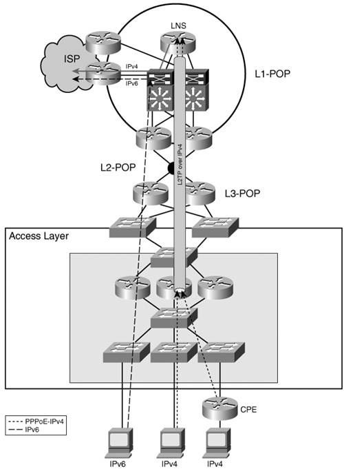

IPv6 Deployment PlansRTPCom's pursuit of IPv6 is not driven by IPv4 address-space depletion pressures. RTPCom relies safely on the private address space to support its wholesale business model. On the other hand, RTPCom sees IPv6 as an opportunity to create the next-generation infrastructure that would allow the company to increase its customer reach, and most important, to diversify its service offering. In particular, RTPCom intends to increase its revenue from existent broadband subscribers by providing an infrastructure for value add services such as CD. Its expansion plans in this sense are limited by the scalability problems faced with enabling multicast in its current network. The potential to leverage IPv6 services as service differentiator in a competitive market did not escape RTPCom's planning. Nevertheless, RTPCom sees IPv6 as an enabler, as well as an opportunity to reinvent its own infrastructure. Targeted IPv6 ServicesDespite deciding to expand its service portfolio, RTPCom does not intend to significantly change its business model. In other words, RTPCom will continue to be an access, wholesale provider and will link its customers to service (Internet or content) providers. RTPCom's goal is to prepare its network to support new types of services offered by the service providers. Table 14-2 summarizes the services RTPCom customers will be able to receive over IPv4 and IPv6.
To support these services, RTPCom's network needs to provide the following:
The actual access to the Internet, the voice services, the management, and distribution of the content are handled by the service providers that RTPCom interfaces with at its L1 POPs. Chapter 13 already discussed in detail the characteristics of most services RTPCom plans to support, therefore the following sections will only highlight any differences specific to this case study. Unicast ConnectivityProviding IPv6 unicast connectivity is essential to all services that would be offered to RTPCom's customers. Unlike IPv4's case, with the IPv6 service an RTPCom subscriber can communicate with any other RTPCom subscriber without going through the ISP. In fact, in the trial phase of the service offering, the subscribers will not be able to access the IPv6 Internet. The emphasis is placed on peer-to-peer communication and services such as VoIPv6. Internet AccessIn a second phase of the deployment, IPv6 subscribers are offered Internet access services. The subscription is similar to the IPv4 Internet access service, but only a single ISP will be available. Initially, the Internet access service is bundled with other services to overcome lower interest because of limited content availability on the IPv6 Internet. DNS ServicesThis is a service managed by RTPCom and it is particularly important because its customers are allowed to communicate among themselves without going through their respective ISPs. BIND 9 is used to implement DNS for the IPv6 deployment. To avoid DNS issues (see Chapter 3), all servers are upgraded to dual stack and they can be reached via both IPv4 and IPv6. The AAAA records are added to all servers. Mail ServicesThe IPv6 ISP provides e-mail services similar to the ones offered to IPv4 users. Dual-stack servers are installed that share the disk resources used for the IPv4 e-mail services. This makes the e-mail services accessible over IPv4 or IPv6. Content Hosting/StorageContent hosting and content storing is also a service offered and managed by RTPCom. These services are viewed as initial incentives to its customers to try IPv6 service. They are also viewed as a means to develop the internal (RTPCom subscribers) community of users. This service is completely new to RTPCom, so further refinement of a business model is expected. The resources needed to support this and the DNS services are hosted in L1 and larger L2 POPs. Voice over IPAnother new service for RTPCom is VoIPv6, which is viewed as an experiment. The intent is to stimulate customer interest and adoption through features, such as video telephony, even though there are no service providers that expressed interest in offering the service. For this reason, RTPCom is providing exclusively on-net to on-net calls between its subscribers. The service will be expanded to provide off-net calls only through partner service providers. The business potential of a VoIP service is well understood by RTPCom's management. A aggressive plan to deploy the service over IPv4 is being developed. Despite being well proven in recent years, VoIP is a new endeavor for RTPCom. For this reason, the VoIPv6 service is seen as a precursor of the larger-scale service rollout for both IPv4 and IPv6. It offers RTPCom the opportunity to develop and test provisioning, management, and billing mechanisms. Technically, the VoIPv6 service is identical to the one described in Chapter 13 for EuropCom. It is SIP based, with the SIP registrar and SIP proxy servers located in the L1 POP data centers. With the larger number of service provided and in particularly in support of VoIPv6, RTPCom will have to implement QoS to meet current and future service level agreement (SLA) requirements. Content DeliveryMulticastCD promises to be a profitable service. The large bandwidths already available with broadband access make it possible to deliver video and audio streams to residential subscribers in parallel with Internet access. Service adoption can in turn increase demand for bandwidth, which results in an increase in business for access providers such as RTPCom. Video and audio content can be delivered on demand or on scheduled basis. On-demand services rely on unicast transport and therefore are less scalable and more expensive. On the other hand, scheduled programs can be delivered with the help of multicast in a scalable manner. Each program is a multicast stream corresponding to one or multiple (S,G). The programs can be received on PCs or set-top boxes provided by the access provider or the service provider. Subscribers can join the ongoing program and they can be charged on a monthly subscription basis or on time spent as a listener for the various multicast streams. The business model will of course dictate the AAA resources deployed with the service. RTPCom is much interested in enabling its infrastructure for multicast. The envisioned business model calls for allowing content providers (CPs) to offer various programming to its customers. The set-top boxes will be provided by RTPCom to allow its customers to switch easier between CPs. In the first phase, the accounting for the service would be done trough monthly subscriptions for program packages. The current wholesale design of the IPv4 infrastructure is not capable of supporting a large scale multicast service. This is one of the reasons why RTPCom accelerated the deployment of IPv6, because it enables it to role out the multicast-based services. Mobile IPv6Communities of InterestThe improvements made to mobility in IPv6 make the service better positioned for deployment. Chapter 8, "Advanced ServicesIPv6 Mobility," describes in detail the MIPv6 operation, support, and configuration on Cisco routers. While the protocol continues to evolve, service models are being developed to leverage this feature. RTPCom realistically assessed MIPv6 as a long-term opportunity, but it formed a task force that is charged with developing a market for this feature. After a thorough market research and participation in several seminars on the topic, RTPCom's MIPv6 task force attempted its first service trial of a Cisco-proposed business model called community of interest. This concept, described in Chapter 8, applies differently to different types of businesses. In the case of a service provider, it basically refers to a group of mobile users that share a common interest. All these users have a home prefix that identifies them. They can move around the service provider network or even the IPv6 Internet if the service is available to that extent, and yet be virtually on the same network. These users can be simple mobile nodes or they can be mobile routers. They can share resources on the home prefix accessible only to them. Configuring such a service is not difficult; it requires nothing more than the information presented in Chapter 8. The concept clearly is powerful, so the only thing left is to define a service around it. The RTPCom MIPv6 task force decided to trial one particular service model that targets business customers in major metropolitan areas. Companies that operate within a metropolitan area and have mobile assets, such as a truck fleet or distribution representatives, need to provide its field people with order, pick-up, and delivery information. This information is not updated real time, but rather every 15 to 20 minutes. The necessary amount of information cannot be sent to a pager or other similar devices and the cell phone use is impractical from a scalability, manageability and cost perspective. However, RTPCom has a MIPv6-based solution to such a problem. A company that purchases regular access (Internet access for IPv4 and IPv6) can trial for free the mobile CI service. RTPCom installs and manages a router at the main offices of the customer. This router is enabled for MIPv6 (see Chapter 8). The laptops on each of the trucks and the laptops or handhelds of the sales force all bind to this home agent. When out in the field during the regular work day, all these mobile devices access RTPCom's network through its WiFi access points (APs) that are spread throughout the city for RTPCom's wireless service. They then connect to the home agent at the main offices and download the relevant data from information servers. The APs can be found at coffee shops, fast-food restaurants, or other public places, so coverage is not an issue. To summarize, the company used in the above example represents a "community of interest," and it is using RTPCom's infrastructure for its own communication needs. The main reason why RTPCom can lock the customers in is that this service is available only when roaming its network and not a competitor's. The mobile device can actually be a mobile router in the case of a truck containing multiple IP devices on different prefixes. Note Nothing would stop RTPCom's customers from managing their own home agent and managing their own "community of interest" so long as RTPCom does not specifically control the mobility services on its network. RTPCom offers the MIPv6 service as an incentive to businesses to subscribe for its access services. The boundaries of this business/service model and its details still need further refinement to make it a source of revenue in itself. This trial has proven to be successful, so RTPCom is considering ways to expand it by identifying new customers, new "communities of interest." Design GoalsRecognizing the benefits of offering multiple types of services such as voice, video, and data (Triple Play) to broadband subscribers, RTPCom decided to prepare its network to support such services in a scalable and high performance manner. It also sees IPv6 as a good opportunity to investigate and trial new network designs that would not see some of the shortcomings of its current PPP/L2TP-based model for the IPv4 Internet access service. In particular, one of the design goals is to support multicast-based services over IPv6. Nevertheless, RTPCom does not intend to build a separate infrastructure for IPv6 but rather to enable the existent one to support the new services in parallel with the existent IPv4 ones. This planned coexistence leads to an important design constraint that the IPv6 services would not impact the revenue generating IPv4 services. In summary, the following bullets are RTPCom's design goals for this IPv6 deployment:
It is expected that at first the IPv6 traffic will be minimal. RTPCom operates under the assumption that in the first one to two years the IPv6 traffic in the core of the network will not be larger than 20 percent of its total data traffic. On the other hand, at the access layer, it is expected that the IPv6 multicast will dramatically change the traffic profiles. Design OptionsWith the deployment targets and guidelines identified, RTPCom set off to investigate its options with respect to enabling IPv6 in its network. Based on the service provider deployment recommendations made by the IETF IPv6 Operations work group (see RFC 4029 and Internet Draft ISP IPv6 Deployment Scenarios in Broadband Access Networks), the guidelines found in documents such as the IPv6 Promotion Council of Japan (see http://www.v6pc.jp/pdf/041007_v6trans_guideline.pdf) and deployment experiences recorded by 6NET project deliverables (see http://www.6net.org/), RTPCom ended up considering two service deployment options:
The solutions that rely on IPv6-over-IPv4 tunnels have been dismissed as not meeting the long term scope of RTPCom's IPv6 deployment. RTPCom does not intend to postpone infrastructure investments related to the IPv6 deployment at the expense of a less-scalable and lower-performance service. Training its operations staff on a temporary solution based on IPv6 tunneling mechanisms would also be a waste of capital. Native deployment is considered on a case-by-case basis as an option in some POPs where routers can be dedicated to support the IPv6 service exclusively. Routers replaced during regular network upgrades can be used to provide IPv6 services with minimal impact on the IPv4 infrastructure. PPP/L2TP-Based Deployment OptionThe first option considered was for IPv6 to map the IPv4 design. In this case, RTPCom's customers would initiate IPv6 PPPoE sessions that are bridged by the access router into an L2TP tunnel that is set up between the access router and the LNS located in the data center of L1 POPs (see Figure 14-7). The PPP sessions are terminated by the LNS and the de-encapsulated IPv6 traffic is handed over to the ISP. Figure 14-7. PPP/L2TP-Based Service Model
All the features necessary to support such a deployment model are currently available as described in Chapter 3 of this book. The most important thing to notice is that with this approach, RTPCom has the option to use L2TP tunnels set up over IPv4; therefore, it could avoid the need to enable IPv6 in the core of its network. The advantages of this deployment option are as follows:
There is only one significant disadvantage to this deployment approach: It does not resolve the scalability problem that plagues the deployment of IPv4 multicast. Considering the advantages of the PPP/L2TP-based design, it is tempting to entertain the idea of a phased deployment with its first phase based on the PPP/L2TP design followed by a dual-stack phase. Dual-Stack Deployment OptionThe natural option for an IP service provider to deploy IPv6 in production is dual stack thus using native forwarding. As expected, the impact of such an approach is significant because all routers in its network will have to be configured for IPv6. In this case, RTPCom is responsible for the IP provisioning of its customers and it will switch their traffic at layer 3 all the way to their service providers. The customer traffic is no longer characterless to RTPCom. Figure 14-8 presents the operation of the IPv4 and IPv6 services in this scenario. Figure 14-8. Dual-Stack Service ModelThe advantages of this deployment option are as follows:
The disadvantages of this approach reflect its departure from the model used currently by RTPCom:
The dual-stack approach clearly addresses the long-term IPv6 strategy of RTPCom by enabling its network for future expansion, for optimal delivery of multicast-based services and mobile services. Despite higher costs and potentially more significant impact on the current network, RTPCom decided to deploy a dual-stack IPv4-IPv6 network. Note Equipment-related costs for rolling out a dual-stack IPv6 service returned numbers lower than originally expected. This is particularly because most of RTPCom's network elements already support the targeted IPv6 features. The deployment will be implemented in phases with service offered initially in large metropolitan areas and then expanded throughout RTPCom's network. The largest expense of the IPv6 service rollout is that of training the operations team, provisioning the services and updating the network management procedures. This decision reflects RTPCom's long-term commitment to IPv6 and Triple Play service offering expansion. |